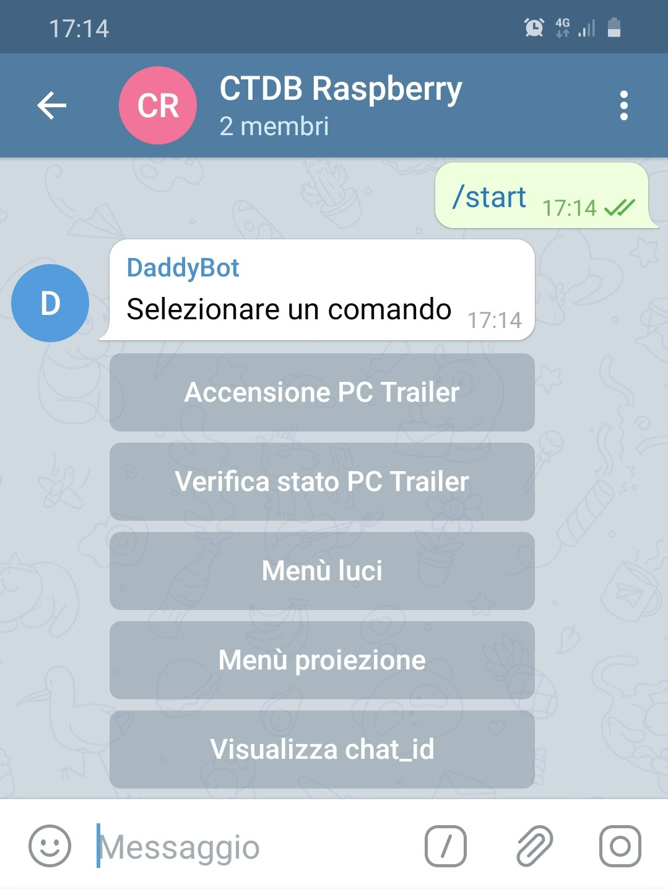
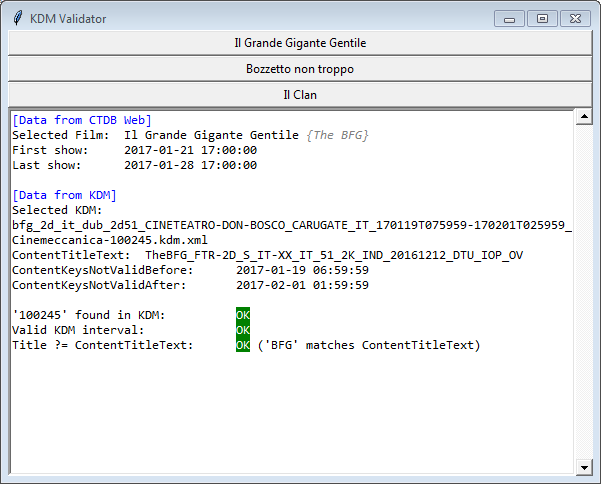
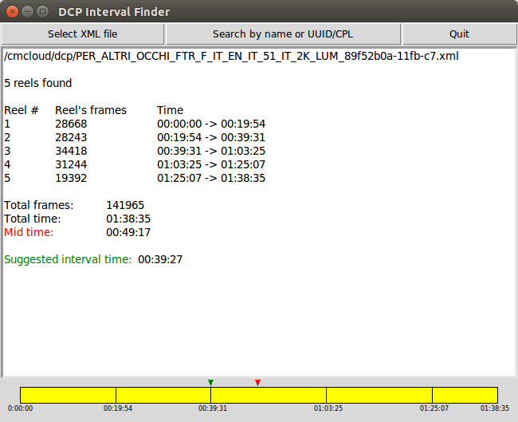
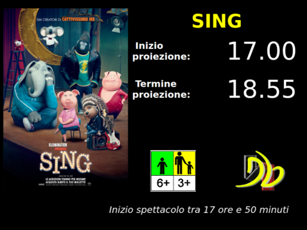
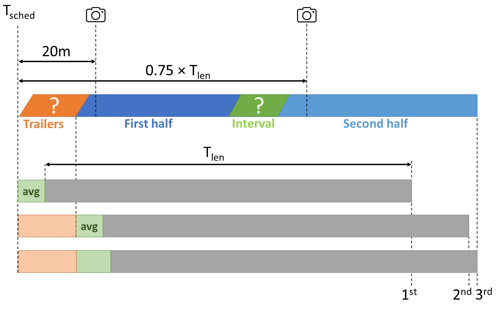
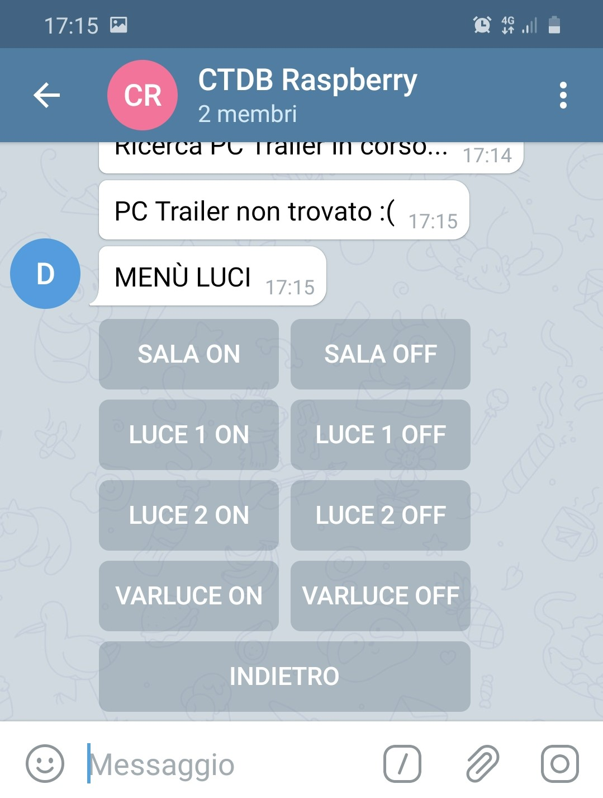

[Leggi in italiano  ]
]
As cinema projectionist at CineTeatro Don Bosco I was mainly involved in the projection of the movies and in the creation of the playlists on the Theater Management System (i.e. adding the movie together with the trailers and configuring the automation of the lights and sound).
The CTDB Tools are a set of tools I developed to support and automate some tasks before, during and at the end of the projection.
Digital Cinema

The Digital Cinema Initiatives (DCI) is a consortium of the major Hollywood studios created in the early 2000s which aims at the standardization of Digital Cinema systems.
In the latest decade, the traditional 35mm film has been replaced by a Digital Cinema Package (DCP), a collection of files including audio and video tracks together with some metadata files.
DCPs are typically delivered to cinemas over satellite links or as physical hard drives. In order to provide security (e.g. to prevent unauthorized playbacks or illegal copies), DCPs are encrypted:
each cinema needs a Key Delivery Message (KDM), a special file, provided by the distributor, containing the cryptographic material which enables a specific Theater Management System (TMS) to retrieve the decryption keys for a DCP to play its content in a pre-defined time window.
Further information on Digital Cinema can be found here.
Before the movie
At the beginning of each week, a courier delivers a set of hard drives containing the DCPs of the movies planned for the weekend. The first step for the creation of the playlist is the ingest, i.e. the copy of all the DCP
files into the TMS. Given that each DPC can take a few hundreds of GB, the whole ingest lasts several hours and it might be useful to verify its status remotely.

The TMS server is however not directly connected to the Internet, but can be reached from a dual-homed computer, PC TR, which we commonly use to handle the KDMs and the trailers. In order to avoid keeping PC TR powered on H24, the first tool I have developed is a Telegram Bot (CTDB Bot), running on a Raspberry PI, enabling users to remotely check the status of PC TR and to turn it on via Wake-on-LAN (WOL).
At boot, PC TR notifies its successful startup via Telegram so that we can log in via TeamViewer and finally access the TMS server via VNC.
[Show more details]
The Telegram Bot runs on a Raspberry PI and has been implemented in Python using the python-telegram-bot module.
The Bot sends out the WOL magic packet using etherwake and allows to check the status of PC TR with nmap.
[Hide details]
Few days before the show, the distributor provides the KDMs by email.
Each KDM has to be ingested into the TMS server to unlock the corresponding movie and enable the playback of its playlist.

It might happen that a KDM is partially incorrect.
Given that a new KDM can only be issued by the distributor, it is essential to timely verify it.
I developed a tool (KDM Validator), running on PC TR, to automate this verification process.
[Show more details]
The tool has been implemented in Python and runs on PC TR.
At startup, the program retrieves the emails of the latest 7 days via IMAP together with their XML and ZIP attachments and extracts them.
It then connects to the database of our cinema’s website to download the information about the latest shows scheduled (their titles and the timings of the first and last shows). It then parses the KDM as XML to extract the following data: the title of the encrypted content, the validity time window and the serial number of the recipient device. It finally automatically checks if (1) our serial number appears in the KDM, (2) the
first and latest shows scheduled falls within the validity time window and (3) there’s a match between the title of the encrypted content and the title of the movie. For this last check, the program retrieves the
original movie title from Wikipedia and IMDB because often the name of the movie encoded in the DCP filename is reported in its original version, while our website always reports the translated title.
For example, as reported in the picture, the KDM's content title for the movie "Il Grande Gigante Gentile" contains BFG and indeed the original title of the movie is "The BFG".
If all the checks succeed, we
are good to go and the KDM can be ingested into the TMS. [Hide details]
Before the Digital Cinema era, the projection of a movie, especially in smaller cinemas, used to be splitted in two parts by an interval (or intermission) whose purpose was to allow projectionists to change out film reels. Nowadays several cinemas preserved this practice to
let the audience have a short break and access the snack bar. In principle the information about the suggested break time might be reported in the techcnical document provided with the hard drive, but this rarely happens in practice.

For some practical reasons (e.g. re-using parts of a DCP or transferring a DCP with storage that have file size limits), a DCP can be provided already splitted in subsections, still called reels, which typically starts with a scene change, as it used to be for film's reels.
I developed a tool (DCP Interval Finder) to retrieve this information from the DCP and automatically provide a suggestion for the intermission time.
[Show more details]
The tool has been implemented in Python and needs to be run on the TMS server in order to be able to access the XML files included in the ingested DCPs. By analyzing the XML file it extracts all the
information about the reels and provides as suggested break time the timestamp corresponding to the beginning of the reel which is the closest to the exact half of the movie. This timestamp can then be used to
configure the TMS automations (i.e. pausing the movie and turning on the lights) when creating the playlist. [Hide details]
During the movie
Before the beginning of the show, it might be useful to provide the audience (and especially their parents!) an estimate of the ending time of the show.

The duration of the movie itself does not provide an accurate enough information because of some sources of uncertainty due to the flexible starting time, the trailers and the break.
I developed a tool (Ticket Office Display) to compute this information from the TMS and provide it at the ticket office on a big display.
[Show more details]
Three sources of uncertainty prevent us to simply add the movie duration T
len to the scheduled show start time T
sched.
First of all, depending on the queue length at the ticket office, the beginning of the show might be slightly postponed.
Second, the set of trailers (sometimes followed by a short introduction by our film critic), further postpone the starting time.
Finally, the break in the middle of the movie has a variable length depending on the queue at the bar and on the specific show type (different shows target different types of audience with different levels of attendance).
I developed a system to provide three estimates with an increasing confidence level.
The back-end, developed in Python, runs on the Raspberry PI, while the front-end is developed in PHP and combines the information provided by our website with the one from the back-end in order to always show the best estimation available.

1st estimate: this measure, shown before the beginning of the movie up to 20 minutes after the scheduled start time, is obtained from the planned movie starting time and summing the movie duration (retrieved from our cinema’s website) and the average interval duration for this specific show type (e.g. saturday night or sunday afternoon).
2nd estimate: a
cron job running each night on the Raspberry PI downloads the planned movie for the current day from our website and schedules the back-end script to be launched 20 minutes after the scheduled movie start time.
At that time we are pretty sure both the trailers and the eventual introduction from the film critic are concluded and we are able to compute the actual movie starting time.
The challenge here is that our TMS does not provide any interface to extract the timestamp of the content currently played.
The script thus extracts this information by connecting to the TMS via VNC, taking a screenshot of the TMS GUI, cropping out of the picture all the non-relevant information and finally applying Optical Character Recognition (OCR) techniques using
tesseract-ocr.
From the timestamp we can then reconstruct the actual starting time of the movie and provide a better estimation for the end time.
3rd estimate: starting from the scheduled starting time, we wait for the 75% of the movie duration and extract again the timestamp as in the previous step.
At this time we are able to compensate for the previously unknown duration of the interval and we can provide the final estimation for the end time.
NB the length of the interval extracted in the previous step is also used to update the average interval duration so that, as the system runs over time, the accuracy of the first two estimations keeps improving.
[Hide details]
At the end of the movie

At the very end of the show, during the movie credits, we need to turn on the lights and this last step can be automated as well in the playlist on the TMS by configuring the exact timing information.

This timestamp, called Credits Offset, can be sometimes found in the document provided with the hard drive, but this is not always the case.
We developed a tool (CTDB Lights) to manually, and even remotely, turn on and off the lights using the GPIO ports on the Raspberry PI as a system complementary to the one interfaced to the GPIO ports of the TMS.
[Show more details]
I was mainly involved on the software side of the system.
The tool has been implemented in Python as an HTTP server interfaced with the GPIO ports using the RPi.GPIO module.
The CTDB Lights service is a web app accessible from any computer connected to the same LAN, making this light control tool useful also during theatre performances.
I have also implemented an Android app which makes the HTTP server accessible even outside the LAN through SSH local port forwarding using the Raspberry PI as a jump server.
Finally, the service is also directly integrated into the Telegram Bot. [Hide details]